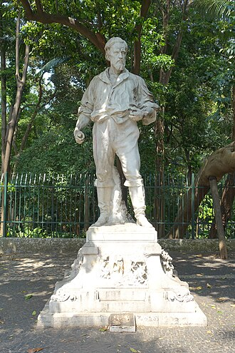

Bartolomeu Bueno da Silva, o Anhanguera
De TriânguloLeaks, a enciclopédia do Triângulo Mineiro
Este artigo é sobre o bandeirante filho (1672–1740), fundador de Vila Boa de
Goiás. Ele é homônimo de seu pai, Bartolomeu Bueno da Silva o velho
(c. 1638–1692), que
também recebeu o apelido de Anhanguera e é às vezes confundido com o filho em fontes
secundárias [verificar].
|
 CC BY-SA Foto de terceiros, via Wikimedia Commons — consulte a página do arquivo para o nome do autor e a versão exata da licença antes de reutilizar. Sobre o licenciamento. | |
| Dados pessoais | |
|---|---|
| Nascimento | , Santana de Parnaíba, Capitania de São Vicente |
| Falecimento | , Vila Boa de Goiás |
| Atuação | |
| Ocupação | Bandeirante, explorador, capitão-mor das minas de Goiás |
| Conhecido por | Expedição de 1722–1725 a Goiás; fundação do arraial que se tornou Vila Boa de Goiás (1736/1739) |
| Legado | Rodovia Anhanguera (SP-330); diversos municípios, ruas e instituições com seu nome |

Bartolomeu Bueno da Silva, conhecido como o Anhanguera
(–), foi um bandeirante
paulista que liderou, entre 1722 e 1725, uma expedição pelo interior do Brasil em busca de
ouro, fundando o núcleo que se tornaria Vila Boa de Goiás e dando origem à capitania (depois
província e estado) de Goiás[1].
O apelido Anhanguera
— do tupi para diabo velho
— havia sido dado antes a seu pai,
também chamado Bartolomeu Bueno da Silva, o que gera confusões frequentes entre as duas
figuras em textos de divulgação[2].
Origem e primeiras bandeiras [editar]
Nascido em 1672 em Santana de Parnaíba, filho do bandeirante homônimo, acompanhou o pai em expedições pelo sertão desde os doze anos de idade. Após as descobertas de ouro em Minas Gerais no fim do século XVII, esteve envolvido na fundação de povoados como Sabará, São João do Paraíso e Pitangui, tendo servido também como administrador distrital nessa região [2].
A expedição de 1722 e a fundação de Goiás [editar]
Em 1720, obteve do rei D. João V autorização para retornar ao sertão em busca da lendária Serra dos Martírios. A expedição partiu de São Paulo em 1722 com mais de 150 homens armados, levando quase três anos de travessia por território difícil. Já com mais de cinquenta anos, encontrou ouro no rio Vermelho, na região que hoje corresponde a Goiás [2]. Estabeleceu o Arraial de Sant'Ana, elevado depois a Vila Boa de Goiás — atual Goiás Velho —, que se tornaria o centro político e econômico da capitania. Nomeado capitão-mor das minas em 1726, viu sua autoridade progressivamente reduzida por divisões administrativas e, acusado de sonegação em 1733, morreu pobre e sem prestígio em Vila Boa, em 1740 [1].
Passagem pelo Triângulo Mineiro (tradição local) [editar]
A rota aberta a partir de 1722 — conhecida depois como Estrada de Goiás ou "Picada de Goiás" — atravessou o território que hoje corresponde ao Triângulo Mineiro, e sua abertura é um dos marcos mais citados na historiografia sobre a ocupação não indígena da região[3]. Diversos municípios da região preservam tradições locais associando pousos e paragens específicas a essa travessia — é o caso de Ibiá, cuja história municipal atribui à passagem do bandeirante um pouso à beira do caminho. Essas tradições são amplamente repetidas em materiais de história local, mas não correspondem a um roteiro documentado ponto a ponto da expedição de 1722 nas fontes biográficas consultadas para este artigo — por isso são tratadas aqui como memória local, não como fato historiográfico estabelecido [verificar].
Legado [editar]
Seu nome batiza a Rodovia Anhanguera (SP-330), uma das principais rodovias do interior de São Paulo, além de avenidas, bairros e municípios em Goiás e São Paulo. É lembrado como figura fundadora da capitania de Goiás, ainda que sua trajetória final, marcada pela perda de prestígio político, seja menos difundida do que o mito fundador [2].
Localização [editar]
Local principal associado à parte final da vida e à morte desta figura: Goiás Velho (antiga Vila Boa de Goiás), Goiás.
Genealogia das pessoas citadas
Nenhuma pessoa com dados genealógicos é citada neste artigo. Consulte Especial:Genealogia para navegar por todas as famílias do site.
Abrir em Especial:Genealogia · Pesquisa avançada (filtros de genealogia)
Referências
- ↑ Wikipédia, a enciclopédia livre. "Bartolomeu Bueno da Silva (filho)" (consultado em 2026), usada como fonte terciária para a expedição de 1722–1725, a fundação de Vila Boa de Goiás e as datas de morte — texto reescrito com palavras próprias nesta seção. pt.wikipedia.org/wiki/Bartolomeu_Bueno_da_Silva_(filho).
- ↑ Wikipedia (em inglês). "Bartolomeu Bueno da Silva" (consultado em 2026), usada como fonte terciária complementar para a biografia e o legado (Rodovia Anhanguera). en.wikipedia.org/wiki/Bartolomeu_Bueno_da_Silva.
- ↑ TriânguloLeaks. Triângulo Mineiro, seção História — a mesma associação entre a Estrada/Picada de Goiás (1722) e o Anhanguera já consta desse artigo, citando a Wikipédia em português como fonte terciária.